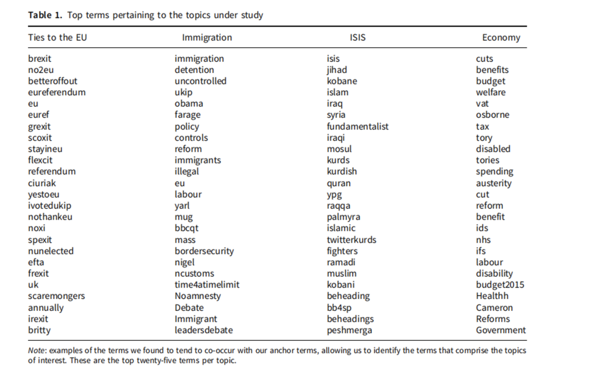
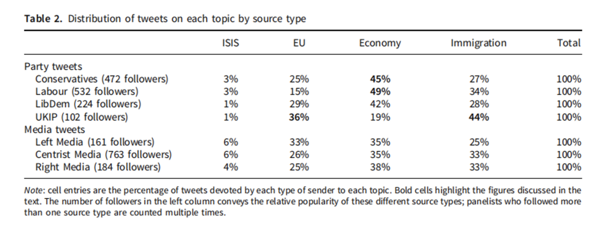
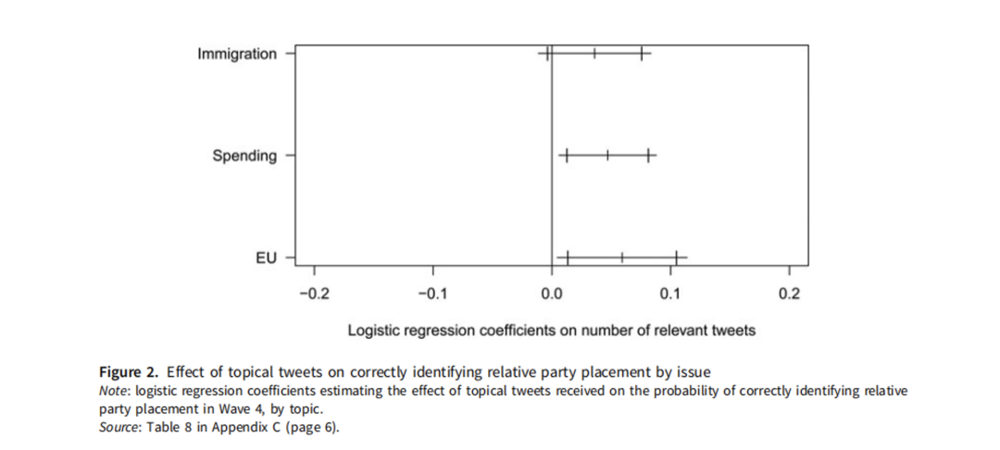
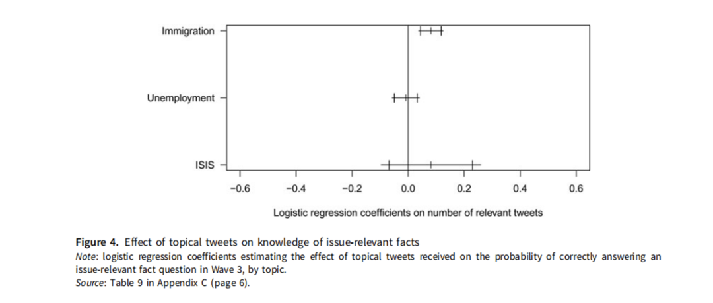
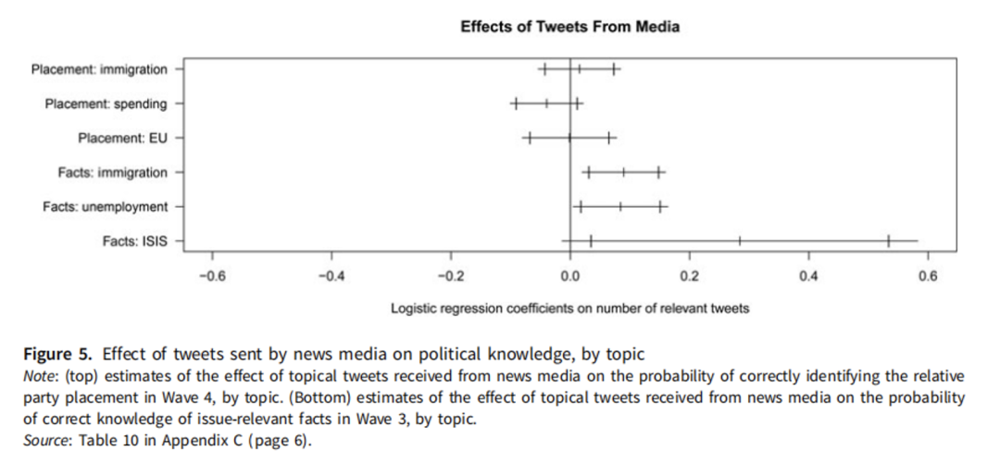
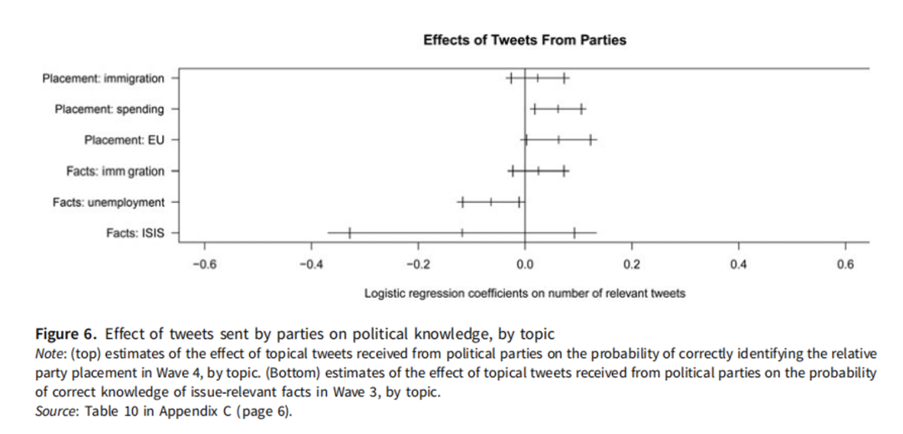
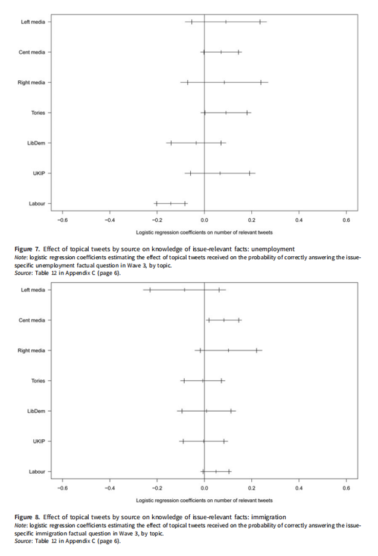

Mungeretal|社交媒体时代的政治认知和误传：2015年英国大选中的证据
收录于合集 #比较政治学 121个
文献来源：
Munger, K., Egan, P., Nagler, J., Ronen, J., & Tucker, J. (2022). Political Knowledge and Misinformation in the Era of Social Media: Evidence From the 2015 UK Election. British Journal of Political Science , 52(1), 107-127.
作者简介：
Kevin Munger，宾夕法尼亚州立大学政治科学系副教授；Patrick J. Egan，纽约大学政治学系政治与公共政策副教授；Jonathan Nagler，纽约大学政治学系教授；Jonathan Ronen，马克斯·德尔布吕克分子医学中心机器学习研究员；Joshua Tucker，纽约大学政治学系教授。
摘要
社交媒体到底是教育了选民还是误导了选民？本研究测量了一组选民在2015年英国大选期间政治认知的变化，同时监测他们在推特社交平台上所接收的政治信息，并通过组间设计辨析信息接收对政治认知的影响。研究发现，推特的使用能够提升对于政治和公共事务的认知水平，因为来自新闻媒体的推文能够提升选民对政治相关事实的认知，而来自政党的推文则能增加选民对于政党的了解。但选举活动对信息的影响尚不明确，政党提供的信息也会引导选民在经济和移民等议题上支持该政党一方，致使一些选民在选举后期有着比初期更不合实际的信念。
研究背景
选举活动是否为选民提供了与他们利益和价值一致的信息供选民决策？这一问题引起了众多政治科学家的关注。本文的贡献，在于记录社交媒体的广泛使用这一媒介技术的重要发展如何影响公众在选举动员中的客观政治认知水平。庞大的使用群体、年轻一代对社交媒体的显著依赖，都表明社交媒体作为信息来源愈加重要。本文通过检验2015年英国大选期间社交媒体对政治认知水平的影响，来验证与社交媒体相关的若干假说。当时英国政党系统充分的流动性使其成为政治认知研究的绝佳案例：历经六个月的时间，保守党在与工党、自由民主党和英国独立党的竞争中赢得了议会的大部分席位。
本文作者与民调公司YouGov合作，在竞选活动中开展固定小组调查，主要创新点在于，对每个对象，研究小组都能够获取其推特上的全部内容。另外，本研究不同于以往的三大特色在于：首先，通过小组设计解决了用户选择性消费政治新闻的问题；其次，依靠对社交媒体使用的客观测量避免了自我报告的缺陷；其三，基于个体而非群体层面的测量使得特定信息源和认知变化的关系更加准确。
社交媒体与政治认知
政治认知，被 Michael Delli Carpini（1997）定义为“储存在长期记忆中的关于政治的事实信息”，对于民主政治的健康运作十分重要。对新闻报道的接触可能与Barabas等人提出的对公共事务的“监督”认知有关，当一个特定议题吸引更多媒体关注时，人们倾向于更加了解这一议题；而政治选举活动可能也扮演了相似的角色，提升了人民在政治议题和政党平台方面的认知水平，虽然影响力较弱。
社交媒体会导致选民获取公共事务信息的方式发生根本性的变化吗？媒介技术的发展总是颠覆着人们获取政治信息的方式，无论是整体层面还是公民个人层面。近年来，随着年轻一代将互联网作为长期记忆的替代，互联网技术展现出了其对不同群体政治认知的差异化影响。另一个重要的转变在于，社交媒介技术使得政治家和政党能够直接接触他们社交平台上的关注者。由于社交媒体传播并不具有传统媒体进行事实核查、应用对立观点等特点，他们更类似广告而非新闻叙事。一方面，社交媒体告知选民一个政党在多个议题上的立场；另一方面，政党与候选人也可以策略性地强调有利他们的新闻事实。出于这些因素，我们可以预见政党提供的选择性强调信息会减少人们对于客观条件的事实性认知，以利于政党选情。但是，社交媒体所引起的戏剧性转变也可能被传统机构的新媒体渠道所削弱。因此，政党信息带来的负面效应很可能被这些传统新闻媒体的正面效应所掩盖，使得在选举活动期间使用社交媒体的净效应趋于有益。
假设
本文通过两类调查问题衡量社交媒介用户在2015选举期间的政治认知变化：议题相关的事实和政党相对立场。议题涉及失业、税收和支出、移民、欧盟及ISIS恐怖组织。
假设1：在整体上，接收推特上特定政治议题的推文会提升对该议题的认知。
假设2：接收推特上新闻机构发送的推文会提升对相关议题的政治认知。
假设3：接收推特上政党发布的推文会提升对政党相对位置认知的准确性。
假设4：接收推特上政党发布的推文会促使选民对该议题相关事实的认知朝着有利于该政党的方向转变。
假设4a：接收执政党发布的经济议题相关推文会使用户准确了解到2015年的失业率下降了；而接收反对党发布的经济议题相关推文则更可能使用户错误地认为2015年的失业率有所上升。
假设4b：接收英国独立党与移民问题相关的推文会使用户高估移民数量。一些用户会因此对于移民的真实数量有更准确的了解，但另一些用户对此的认知可能变得更不准确；因而从总体上看，对该议题的认知准确程度并未提升。
数据
**** //推特
研究者通过关键词识别的方式筛选和分类出与上述四个议题相关的推文内容。针对推文的议题类别，研究者通过前二十五个出现频次最高的词语进行识别筛选分类（见表1）。

另外，本研究也根据发出推文的账号性质进行分类，共识别出462个政党或者政治家相关账号；987个新闻媒体或者记者相关账号，并根据不同政党、媒体的意识形态倾向进行进一步细分（见表2）。

研究还发现，各个政党和新闻媒体账号所强调的议题有很大不同（见表2），值得关注的是，作为新兴政党的英国独立党相当强调移民和欧盟议题，这与保守党与自由民主党通常在劳工等问题上的相似立场不同，为编码提供了表面效度。
//调查数据
本研究设计了四次小组调查，样本由民调公司YouGov在他们全国的网络成年公民代表中抽取，分为推特用户和非推特用户。这四次调查的时间被设定在选举之前、之中和之后。
——政党相对立场的测量
这一测量项目用以了解受访者区分政党在不同议题上的“左-右”倾向的能力，测试量表如下：
· 税收vs.支出议题：（左派）社会支出应该增加，即使这意味着更高的税收；（右派）应该减少税收，即使这意味着更少的社会支出
· 欧盟议题：（左派）英国和欧盟发展更强的联系；（右派）英国应该离开欧盟
· 移民议题：（左派）合法移民应该大量增加；（右派）合法移民应该大量减少
在测量分析中有一项颇有挑战的工作：建立关于政党实际立场的“基准事实”。本研究以所有受访者答案的均值作为“基准事实”，在调查过程中这一数值整体保持稳定；另外，多轮的调查方法能够更好地使研究者追踪在选举过程中政党的变动情况。
——议题相关事务的测量
本文研究者在第二和第三轮调查中对受访者与议题相关的事实认知进行测量，测量通过多选题进行。题目如下：
· Q1：被称为“ISIS”的伊斯兰军事组织的控制区涉及以下哪些国家？
（叙利亚、科威特、摩洛哥、巴基斯坦）
· Q2：相比一年以前，英国的失业率是上升了、下降了还是与以前相同？
· Q3：在过去的五年里，从其他欧盟国家进入英国的移民大概有多少？
（每年人数少于100,000人、每年人数在100,000到300,000之间、每年人数在300,000到500,000之间、每年人数多于500,000人）
结果
H1：社交媒体使用和政治认知
首先，在政党相对立场的认知方面，针对假设1的分析结果显示，推特信息对于提升三个议题相关的政党立场认知有积极影响。在税收与支出、欧盟两个话题上，推特影响的效果在0.05的水平上显著；而在移民的问题上，显著水平则略低于0.10（见图2）。

而在与议题相关的事实认知方面，分析结果显示：在移民议题上，推文的数量和被试者的认知水平呈显著正相关；而在ISIS议题上，则呈正相关但并不显著；在失业议题上两者相关度则近乎于0（见图4）。

H2：新闻机构推文的影响
针对新闻媒体推文的分析结果发现，这些信息与事实认知的准确性呈正相关关系，且在移民和失业议题上显著性水平为0.05，而在恐怖组织议题上显著性水平为0.10（见图5）。整体而言，新闻媒体发出的推文能够提升选民对于选举活动中心议题的认知，但对于政党立场认知则呈中性效果。总体上，新闻媒体信息对提升选民政治认知的贡献是积极的。

H3:政党推文的影响
在针对假设3的分析中，研究发现来自政党的推文与税收支出认知在0.05的显著性水平上呈现正相关，而与欧盟议题的认知在0.01的水平上呈正相关。但在移民或者ISIS恐怖活动的议题上，政党推文并未提升选民的相关认知（见图6）。

H4:政党推文对事实相关认知的影响
在移民和失业问题上，来自政党的推文都将民众的认知方向引导向对其有利的一面：在失业问题上，各党派推文对失业率认知的作用不尽相同；在移民问题上，分析则显示没有任何政党的推文能够增进选民对于移民率的准确认知（见图7、8）。总结而言，对于假设4的分析使我们有理由担忧通过社交媒体散播的政党信息：在缺乏传统媒体过滤的情况下，有时这些信息会提升选民对于事实的认知程度；但同样也可能将选民的认知引导到对该政党有利的、不符合事实的方向。

结论
本研究印证了社交媒体使用和公众政治认知提升之间的关联。在这一研究问题上，本文的结果与前人对传统媒体的研究大体一致。但与前人的一些担忧相反，本文认为，社交媒体用户在2015大选期间的政治认知有所提升：来自新闻媒体的信息提升了对议题相关事实的认知；而来自政党的信息则提升了对政党立场和选举核心议题的认知。
但本研究也有一些令人忧心的发现。在重要议题上，政党信息可能会导致认知极化。例如，移民和全球化议题日益导致西欧民主社会内部的分裂。英国独立党信息导致的双重效应值得特别关注：一方面，社会整体对于移民数量的认知水平并不会因此下降；但另一方面，英国独立党的支持者们可能会因此提升他们的估计，进而导致在这一关键议题上的分歧加大。
在政治传播这一经典问题上，社交媒体在今天的政治生活中处在比以往任何时刻都更突出的位置。在许多方面，社交媒体会加强传统媒体对于政治认知的影响——尤其是非政党组织提供的信息，对于政治认知水平的提升有与之前相同的作用。然而，社交媒体也给政治家和党派提供了大量机会，使他们能够摆脱外部行动者，越过“看门人”和传统媒体提供的背景信息进行政治传播活动。在一个大众媒体愈发广泛且分散、传统媒体日渐式微的时代，这一趋势对于以选举作为重要功能部分的大众民主颇具挑战。
编译：邓嘉宁 审校：殷昊 编辑：韩丽嵘